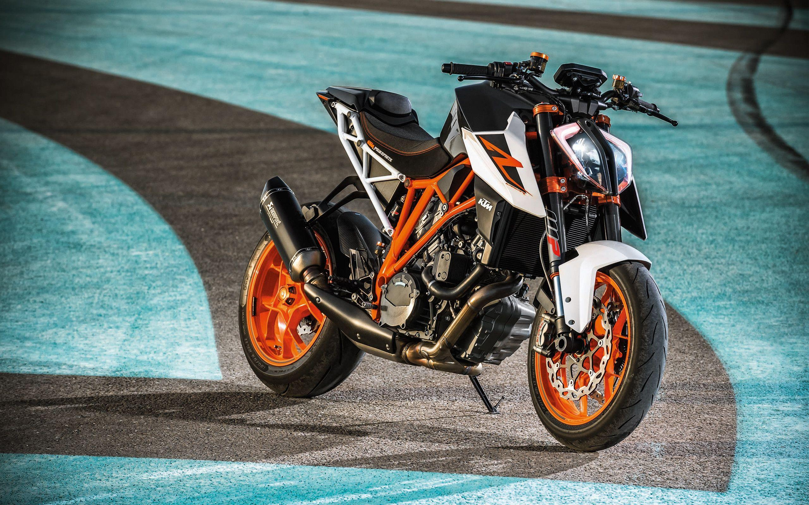
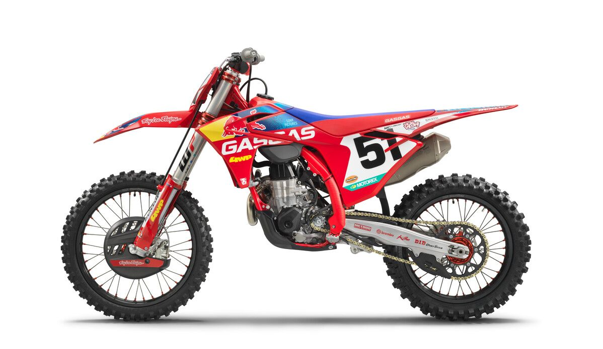

¿Por qué las motos?
Cuando era pequeño, mi padre me metió en el mundo del motor. Gracias a él aprendí todo sobras las motos y poder disfurtarlas al máximo. Mi moto favorita es la yamaha r6, lucharé lo máximo que pueda hasta poder conseguirla. En el mundo de las motos aprendes mucho, y además la gente que tiene motos te trata como uno de los suyos. Siempre estaré agradecido con mi padre por meterme en el mundo de las motos.
Tipos de motos
-
Deportivas
Las motos deportivas están pensadas para ofrecer el máximo rendimiento y sensaciones, con una postura agresiva, gran potencia y una conducción muy precisa.

-
Naked
Las motos naked son más versátiles y cómodas, con una posición erguida y sin carenado, perfectas para el día a día sin renunciar a buenas prestaciones. 
-
Cross
las motos de motocross están diseñadas exclusivamente para el campo y los circuitos de tierra, siendo ligeras, resistentes y muy ágiles para superar saltos y terrenos difíciles. 
-
Trail
Las motos de trail destacan por su polivalencia, ya que permiten viajar cómodamente por carretera y aventurarse fuera del asfalto gracias a su ergonomía y suspensiones.

Seguridad
La seguridad en moto depende en gran parte del propio motorista: usar siempre el equipamiento adecuado, mantener la moto en buen estado y adaptar la conducción a las condiciones de la vía es fundamental. Conducir con cabeza, anticiparse al tráfico y respetar los límites reduce mucho el riesgo, porque una moto ofrece grandes sensaciones, pero exige responsabilidad y atención constante. Además, puedes conducir una moto a partri de los 15 años. Para poder hacerlo, es nacesario sacarse el AM, ese te permite coger motos de hasta 50cc. El de 16 años te permite coger motos de hasta 125cc. Con 18 años te puedes sacar el A2, que te permite coger motos de hasta 35kw (47cv). Por último, con 20 años te puedes sacar el A, que te permite coger motos de cualquiere cilindrada.